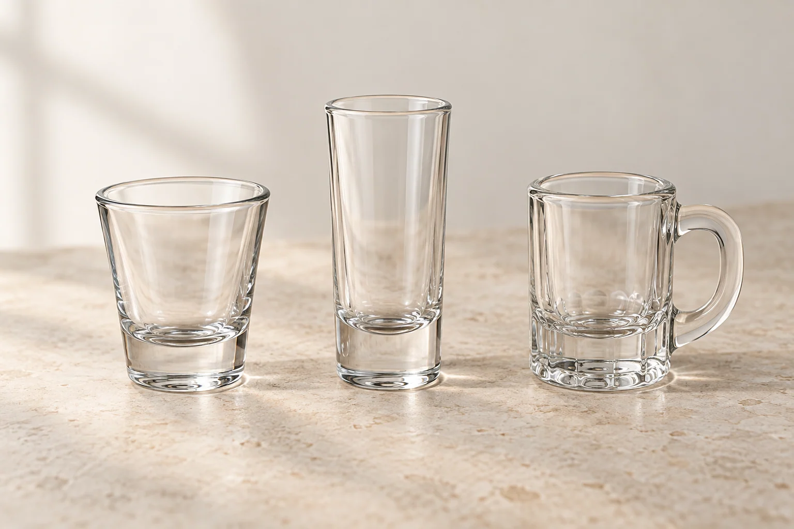
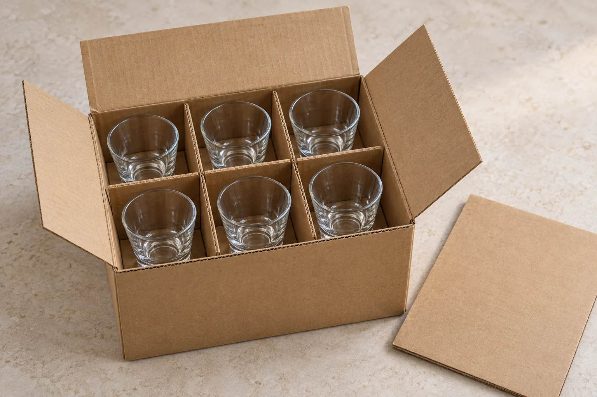

The packaging for a bulk shot glass order should be selected alongside the glass, not added after the unit price is agreed. A short bar glass, a tall souvenir shooter and a handled mini mug need different fit checks. A six-piece gift set also creates a different packing and counting problem from loose glasses supplied to a hospitality distributor.
This guide explains how to compare shot glass packaging, define the carton quantity and approve a packed sample. It focuses on protection and order accuracy. For the wider sourcing process, start with the Shot Glass Buying Guide for Wholesale Buyers.
Quick decision: which packing format should you request?
- Restaurant or bar replenishment: request protective bulk packing with a clear inner-pack and master-carton specification. Confirm how staff will unpack, count and store the glasses.
- Individually sold souvenirs: discuss an individual box or another agreed retail pack, including protection for the rim and decoration.
- Gift sets: specify the number and arrangement of glasses in each retail box, then the number of complete sets in each shipping carton.
- Direct-to-customer parcels: explain the final parcel route. A retail gift box needs a separate review of whether it can function as a shipping package or requires an outer pack.
There is no single pieces-per-carton figure or divider design that fits every shot glass. Use the exact glass, decoration and distribution route when requesting a proposal.
1. Compare glass profiles before approving the insert
Capacity is useful for drink service, but outside dimensions determine how the glass fits inside a pack. Record overall height, maximum outside diameter, base diameter and weight. For a handled shape, add maximum width including the handle and its orientation inside the cell.
Use an actual sample or confirmed drawing. A product photograph is useful for identifying the shape, but it should not be scaled to create an insert. If you are still resolving the volume specification, use the separate shot glass capacity-check guide.

Three Glarivo catalog references show the questions to ask. The following listing details were checked on September 22, 2026; they are not sample measurements or a confirmed packaging offer.
- Short profile — GB073502: the clear shot glass currently lists 144 pieces per carton. Request the inner layout, outside measurements with units, carton dimensions and the pack for your chosen finish.
- Tall decorated profile — GB070203H-TH-QT-580A: the souvenir-style tall shot glass lists 102 mm height, 40 mm top and bottom diameters, and 144 pieces per carton. Confirm how the insert locates the glass and protects your approved decoration.
- Handled mini mug — GB095002: the mini shot mug lists 72 pieces per box. Ask whether “box” means an inner pack or master carton, and confirm full width across the handle before approving a cell layout.
The two listings showing 144 pieces do not establish identical carton sizes, protection or freight requirements. Likewise, “72 pieces per box” should not automatically be entered as 72 pieces per shipping carton.
2. Define the packaging layers in plain language
Ask the supplier to describe each layer and show how it fits into the next one. Use the same definitions on the quotation, packing list and sample approval record.
Unit or retail pack: the item sold or supplied as one unit. It might contain one glass, four glasses or another agreed assortment. State the glass count and any accessories explicitly.
Inner pack: an intermediate grouping, if used. Identify whether it is a small box, tray, sleeve arrangement or another assembly, and record how many glasses or retail sets it contains.
Master carton: the outer shipping carton containing the agreed inner packs or retail units. Record total glasses, total sellable sets, external dimensions and gross weight.
Pallet or final parcel: a further shipping configuration when applicable. Tell the supplier whether cartons remain palletized, are separated in a warehouse, or are repacked for individual delivery. Review that stage with the logistics provider.
For bulk supply, the useful question is how the glass is located and separated inside the carton. For gift-box supply, add the customer's unboxing and repacking experience. Attractive printing and a neat insert still need to be evaluated as part of the complete shipping pack.
3. Check dividers, clearances and contact points
A divider should be evaluated with the selected glass inside it. Ask for clear photographs from above and from the side, followed by a physical packed sample when fit matters to approval.
Inspect the assembled pack for these conditions:
- Glasses remain in separate cells, with no unintended glass-to-glass contact.
- The rim does not become the unintended bearing point when the carton or retail box closes.
- The base is supported by the proposed bottom protection.
- A tall glass is located by the intended insert rather than left free to move through excessive clearance.
- A handle stays inside its own protected space, without a neighboring glass or divider pressing against it.
- Sleeves, inserts or other contact surfaces do not visibly rub or mark the approved decoration during the agreed evaluation.
- Top and bottom pads, where specified, are present in the actual sample and final component list.
Avoid choosing universal clearance dimensions from a generic illustration. Fit depends on the glass variation, insert material, assembly and intended handling. Ask the packaging supplier to propose the dimensions and tolerances, then assess the complete sample.

If the design has several layers, ask how each layer is separated and supported. Do not assume an upper layer can rest directly on lower glass rims. Approve the complete carton, not only an attractive photograph of the top layer.
4. Gift boxes: count sets and protect the finished appearance
For a shot glass gift box, define the number of glasses, their orientation and whether all positions contain the same model. A mixed set needs a position-by-position component list so that assembly staff can distinguish similar-looking pieces.
Check that each glass can be removed and replaced without forcing the rim or handle against the insert. Close the box with all components installed and review the fit, appearance and movement under the agreed sample-check method. A window, ribbon, printed sleeve or decorative insert should have its own approved specification if it is part of the offer.
Evaluate a decorated glass in the proposed pack. Approval of a plain sample does not show how the final print, coating or metallic finish will interact with the packaging. Link the packaging sample to the same artwork and glass reference used in your custom-logo shot glass approval.
Keep retail presentation and shipping protection as separate approval decisions. If the gift box is to travel inside a master carton, inspect the protection between gift boxes as well. If it will later ship as an individual parcel, review that parcel configuration separately.
For barcode ownership, label copy and retail identifiers, use the private-label glassware packaging guide. This packaging brief should state the required label locations without substituting for that wider retail review.
5. Reconcile pieces, sets, cartons and volume
Write the unit beside every number. “240” could mean glasses, gift sets or cartons, and those quantities are not interchangeable.
Consider a hypothetical order of 1,440 shot glasses:
- Bulk option: at an agreed 144 glasses per master carton, the order requires 10 master cartons.
- Gift-set option: at 6 glasses per gift set, the order contains 240 gift sets. If each master carton holds 12 sets, that is 72 glasses per carton and 20 master cartons.
These are planning assumptions, not standard packing configurations for the linked products. Confirm that the purchase order and supplier's offer describe the same configuration before comparing their prices.
Use external carton measurements for a carton-volume estimate. Convert centimeters to meters before multiplying:
Carton volume in m³ = external length in m × width in m × height in m.
If the hypothetical bulk carton measures 40 × 30 × 20 cm, each carton is 0.024 m³ and 10 cartons total 0.240 m³. If the gift-set carton measures 40 × 30 × 25 cm, each is 0.030 m³ and 20 cartons total 0.600 m³.
This example shows how a retail-pack decision can change the shipping volume even when the total glass count is unchanged. It does not predict the dimensions of your actual pack. The totals also exclude pallet space and other logistics allowances; obtain a freight quotation using the actual dimensions, weight, route and shipment configuration.
Ask the supplier to state how incomplete cartons, spare units or mixed designs will be handled. Record any additional pieces separately rather than assuming a free breakage allowance or changing the ordered set count.
6. Separate sample fit from transport performance
Opening a sample box and checking the insert answers important fit and presentation questions. It does not establish how the packaged product will perform through the full delivery route.
Discuss the planned distribution with a packaging specialist or test laboratory: pallet handling, warehouse transfers, loose-carton transport and individual parcel delivery can require different evaluation plans. ISTA explains that test selection should reflect the actual distribution environment and that representative product-and-package samples matter. See ISTA's introduction to packaging design and testing.
Ask the supplier or laboratory to identify the proposed procedure and current version, the sample configuration and the acceptance criteria before testing. Obtain a report that identifies the actual glass, decoration, packaging materials, layout and closure method reviewed. A report for a different product or carton is not evidence for the configuration you are ordering.
Do not present an informal shake check or an unrecorded drop as proof of a completed test procedure. Likewise, a “fragile” marking is not evidence of protective performance. Confirm what was evaluated and keep the result linked to the agreed packing specification.
7. Keep a packed-sample approval record
Use a short written record that a buyer, supplier and receiving team can all understand:
- Product: glass reference, decoration version and confirmed outside dimensions.
- Sellable unit: glasses per set and the exact assortment or accessories, if any.
- Packing layers: unit pack, inner pack, master carton and further shipping configuration where applicable.
- Protection: insert or divider reference, layout, pads, sleeves and the agreed material specification.
- Carton data: total pieces, total sets, external dimensions, net weight and gross weight with units.
- Sample findings: fit, contact points, appearance, count and any agreed exceptions, supported by photographs.
- Performance evidence: applicable test plan and report references, or a clear note that this stage covers fit and presentation only.
- Approval: sample date, revision, responsible parties and the process for reviewing later changes.
Keep the approved packed sample or an agreed reference set. Before a repeat order, ask whether the glass profile, decoration, insert, board specification, layout or closure has changed. Review the implications rather than assuming the previous approval covers a different pack.
Packed-sample approval and production-lot inspection serve different purposes. Agree how finished cartons and their contents will be checked before shipment. For the wider inspection framework, see the glassware defects and AQL guide.
Request shot glasses with a clear packing brief
Shortlist your models from the Shot Glass collection and use the inquiry option on the relevant product page. Include:
- Product links, quantities per model or design, and destination.
- Bulk supply, individual retail pack or gift set, including glasses per set.
- Artwork and finished appearance requirements where relevant.
- Proposed inner and master-carton quantities, or a request for comparable packing options.
- The planned distribution route and any retailer or logistics-provider requirements.
- Packed-sample scope, agreed checks and required delivery milestone.
- A quotation separating glass, decoration, packaging, setup charges and freight assumptions.
Request the pack description and external carton data with the quotation. This lets you compare the complete order, rather than comparing a bare-glass price against a retail-ready gift set. Return to Shot Glass Sourcing for related purchasing decisions.
Frequently asked questions
How many shot glasses fit in one carton?
It depends on the exact glass and packing configuration. Confirm glasses per inner pack, inners or sets per master carton, total pieces, external dimensions and gross weight. Do not apply a catalog carton quantity to a different shape or gift-box version without confirmation.
Can one insert fit both short and tall shot glasses?
Only use a shared insert when its fit has been approved for each intended model. Height, maximum diameter, base and handle projections can change how the glass is supported and located. Similar capacity does not establish packaging compatibility.
Does every glass need its own retail box?
Choose the retail format around how the glass will be sold or supplied. A hospitality bulk order and an individually sold souvenir have different presentation requirements. In either case, specify the protection inside the complete shipping carton.
Does a gift box replace the shipping carton?
Do not assume it does. Confirm whether the box is a retail presentation pack or a package designed and evaluated for the intended delivery route. Review any outer protection and final parcel configuration separately.
Will a heavier glass avoid breakage in shipping?
Weight alone does not establish transit performance. Evaluate the exact glass together with its packaging, handling route and supporting evidence. Request the appropriate sample and test information instead of judging protection from the base thickness.
What should I record if goods arrive damaged?
Follow the receiving and claim procedure agreed with your supplier and logistics provider. Record the affected carton references, counts, packaging condition and photographs where safe, and retain the relevant records. Isolate broken goods and use your workplace's safe handling procedure; do not put damaged glasses into service.